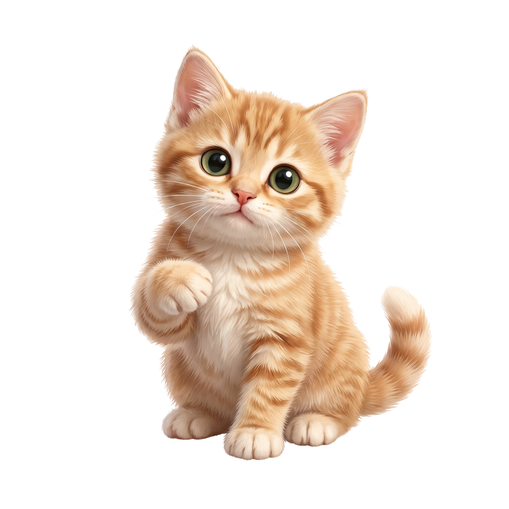
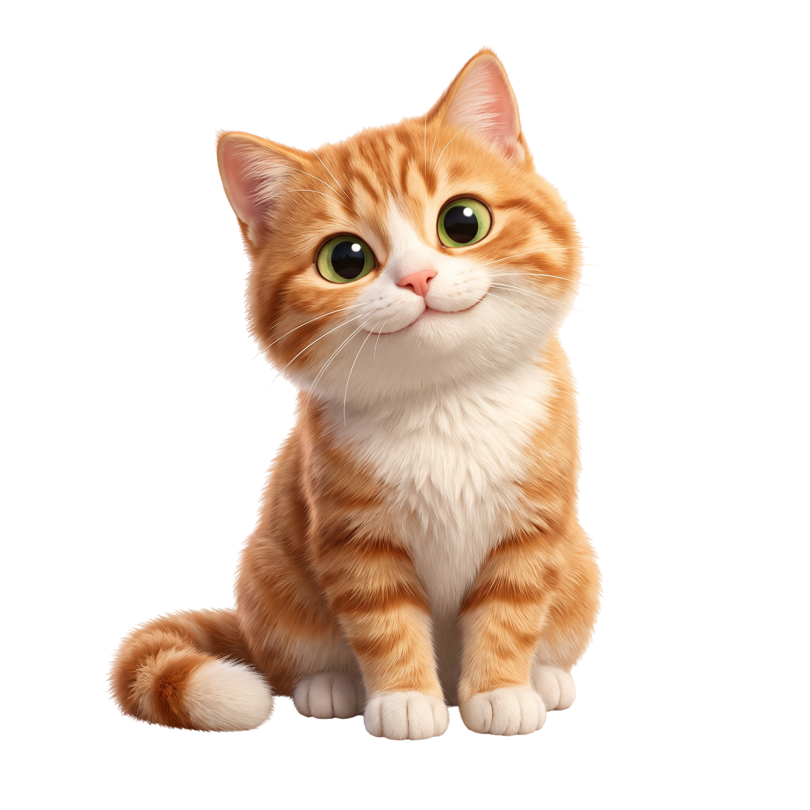
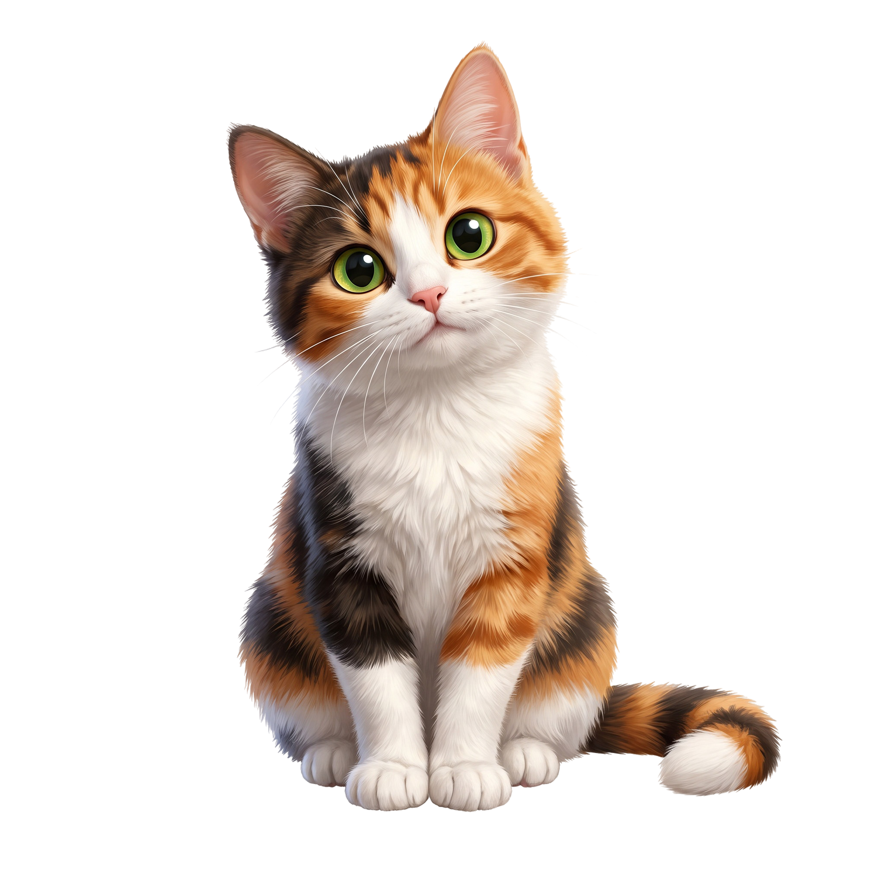
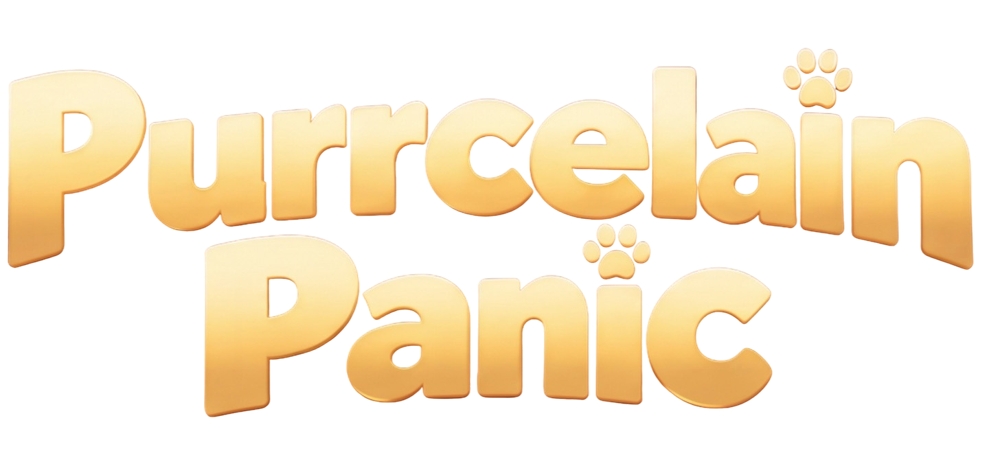
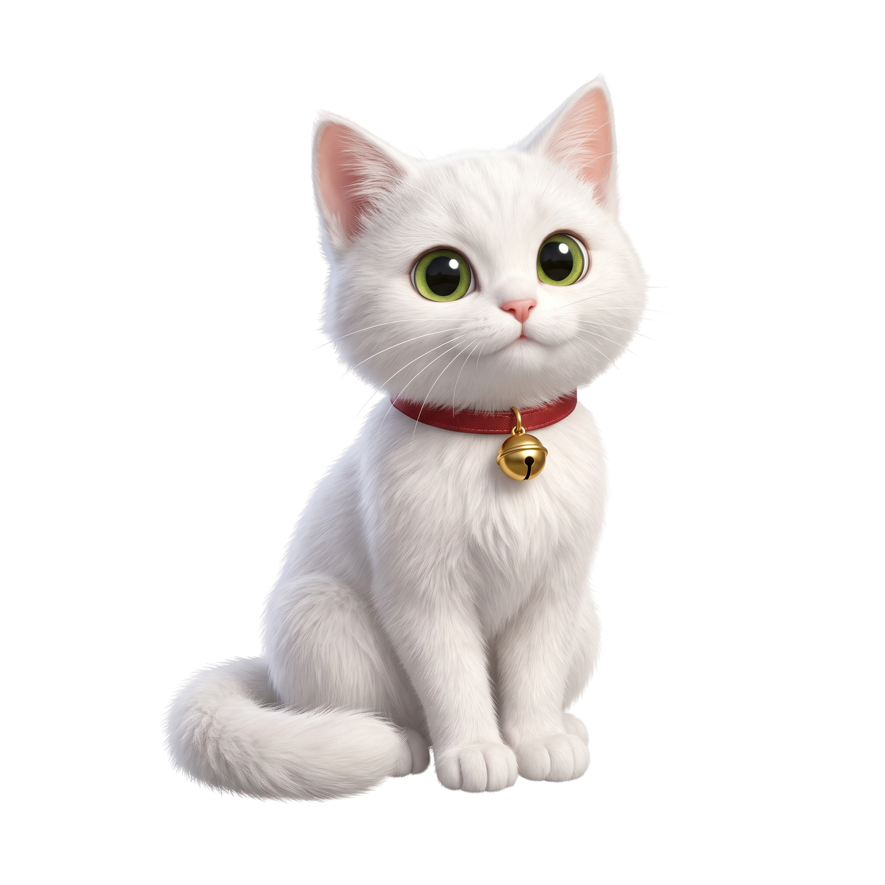

MOBILE GAME · ELEVATOR PITCH
Спіймай комаху.
Збережи бабусину порцеляну.
Концепт гри
Гравець керує котом старенької колекціонерки порцеляни. Кімнатою літають комахи, і кіт має спіймати їх, не розбивши бабусину колекцію.
Жанр: physics-based hyper-casual arcade
Платформа: iOS та Android
Рушій: Unity
Формат: вертикальний екран, керування одним пальцем
Game loop
Затисни кота, задай напрямок і силу стрибка, потім відпусти.
- Побачити комаху
- Розрахувати стрибок
- Спіймати здобич
- Безпечно приземлитися
Керування одним пальцем. Один рівень 30-60 секунд.
Розвиток складності
Кожен новий рівень підвищує ризик, але зберігає просте керування.
- Швидші комахи
- Більше крихких предметів
- Рухомі полиці та слизькі поверхні
- Нові кімнати й коти
- Вищий ризик - більша винагорода
Три розбиті речі - бабуся заходить у кімнату, рівень завершено.
Цільова аудиторія
Початкова гіпотеза для тестування
Основна аудиторія
Дівчата та жінки 13–65 років, які люблять котів, cozy-візуал і прості мобільні ігри.
Що їх об’єднує
Короткі ігрові сесії, зрозуміле керування, милі персонажі та відсутність складного навчання.
Ключові мотиватори
Кумедна фізика, кастомізація, колекціонування та нові тематичні світи.
Сімейний потенціал
Гра може зацікавити дітей від 7 років, але реклама й покупки потребують батьківського контролю.

Монетизація
Косметика змінює вигляд гри, але не дає переваги в проходженні.
Вік кота
Кошеня, дорослий кіт, старенький кіт. Кошеня — найдорожчий преміум-варіант.
Кастомізація
Породи, забарвлення, кашкети та одяг.
Колекції об’єктів
Порцеляна, фоторамки, глечики, лабораторний посуд.
Тематичні світи
Будинок бабусі, квіткова крамниця, бус, ферма, лабораторія.
Модель: внутрішня валюта, rewarded ads, in-app purchases, тематичні набори.
Бюджет Vertical Slice
Попередня оцінка
Термін: 13 тижнів
Тижні 3-13 проєкту. Готовність наприкінці 13-го тижня.
Один завершений показовий рівень. Тестові збірки Android та iOS.
Development Plan
Від концепту до вертикального зрізу
01 Концепт і планування
02 Ігровий прототип
03 Вертикальний зріз
Етап 1 · Концепт і планування
тижні 1-2
| Activity | Role | Load |
|---|---|---|
| Визначення меж проєкту, цільової аудиторії та плану виробництва | Producer / PM | Full-time 100% |
| Основний ігровий цикл, GDD і базова прогресія | Game Designer | Full-time 100% |
| Технічна реалізація та архітектура | Senior Unity Dev | Full-time 100% |
| Візуальний напрям і вимоги до асетів | Senior 2D Artist | Full-time 100% |
| Дослідження ринку та план UA-тестування | UA Manager | Part-time 25% |
Етап 2 · Ігровий прототип
тижні 3-4
| Activity | Role | Load |
|---|---|---|
| Ігровий цикл і керування | Senior Unity Dev | Full-time 100% |
| Прототип фізики, колізій і логіки перезапуску | Senior Unity Dev + Game Designer | Full-time 100% / Full-time 100% |
| Тимчасові візуальні елементи | Senior 2D Artist | Full-time 100% |
| Внутрішнє QA та ігрові тестування | Middle QA | Part-time 25% |
| Перевірка привабливості прототипу для ринку | UA Manager | Part-time 25% |
| Stage check: затвердження меж vertical slice | Producer / PM | Full-time 100% |

Етап 3 · Вертикальний зріз
тижні 3-13

| Activity | Role | Load |
|---|---|---|
| Game ready рівень | Game Designer | Full-time 100% |
| Інтеграція графіки, інтерфейсу, анімацій і базового звуку | Senior Unity Dev | Full-time 100% |
| UI ігрового рівня та навігаційні елементи | UI Artist | Full-time 100% |
| Створення арт-пакета: кіт, кімната, комахи та порцеляна | Senior 2D Artist | Full-time 100% |
| Анімації кота, реакції та візуальний зворотний зв'язок | Middle 2D Animator | Part-time 50% |
| Аналітика та технічна оптимізація | Senior Unity Dev + Product Analyst | Full-time 100% / Part-time 25% |
| Функціональне тестування на пристроях | Middle QA | Part-time 50% |
| Перші рекламні креативи та UA-тест | UA Manager + Motion Designer | Part-time 25% / Part-time 25% |
| Stage check: рішення щодо переходу до повного виробництва | Producer / PM | Full-time 100% |

PROJECT RESPONSIBILITY MAP
RACI Matrix
Хто приймає рішення, хто виконує роботу, кого залучаємо до консультацій і кого тримаємо в курсі.
Core Team
| Position | RACI | Duties |
|---|---|---|
| Producer / PM | AR | Project ownership, scope, schedule, budget, risks, communication |
| Game Designer | AR | Core loop, game feel, rules, balance, levels, progression, tutorial |
| Senior Unity Developer | RC | Technical architecture, prototype, core systems, feasibility checks |
| Middle Unity Developer | R | Production features, shop, ads, saves, implementation tasks |
| Senior 2D Artist | RC | Visual direction, cats, interiors, porcelain assets, final art quality |
| Middle 2D Animator | R | Cat animation, insect animation, porcelain reactions, visual feedback |
| UI/UX Designer | RC | Interface, player onboarding, shop flow, progression screens, settings |
Підтримка і бізнес
| Position | RACI | Duties |
|---|---|---|
| Middle QA Engineer | R | Build testing, bug reports, regression testing, IAP, ads, saves |
| UA Manager | RC | User acquisition tests, CPI, channels, soft launch campaigns |
| Motion Designer | R | Ad videos, store promo assets, playable-style creative |
| Product Analyst | RC | Retention, CPI, LTV, funnel analysis, player behavior insights |
| Sound Designer | R | Cat sounds, porcelain hits, UI sounds, satisfying audio cues |
| Community Support | RI | Player feedback, store reviews, support issues after launch |
| Investor / Sponsor | AI | Funding, key approvals, progress visibility, business-level decisions |

PROJECT SCOPE MAP
Scope Management Plan
Визначаємо межі проєкту, ключові результати та взаємозв’язки між частинами роботи, щоб команда рухалась в одному напрямку.
SCOPE MANAGEMENT PLAN
Scope Diagram
PROJECT DELIVERY TIMELINE
Gantt Diagram
13-тижневий план Vertical Slice з точним порядком задач, паралельними процесами та тривалістю в робочих днях.
VERTICAL SLICE · 13 WEEKS
Production Timeline
PROJECT RISK REGISTER
Risk Register
Фіксуємо ключові ризики Vertical Slice, їхню ймовірність, вплив, власників і план реагування.
RISK REGISTER · VERTICAL SLICE
Risk Register
Поточні ризики, відповідальні власники та дії для збереження плану виробництва.
| Risk Description | Probability | Impact | Owner | Strategy | Action Plan | Top 3 | Reserve |
|---|---|---|---|---|---|---|---|
| Lead Artist може бути перевантажений під час Art Concept, Asset Production Category: People | High | High | Producer / PM | Avoid |
| Yes | 2-3 дні резерву на бек-ап артистів |
| Senior Dev може стати недоступним під час Unity Integration. Category: People | Medium | High | Tech Lead | Mitigate |
| No | 1 день резерву дев-ресурсу |
| Spine-анімації можуть імпортуватися в Unity з неправильною scale, pivot або timing подій. Category: Tech | High | High | Senior Dev | Mitigate |
| Yes | 3 дні резерву в графіку перед тестуванням |
| Playable level може працювати повільно або HUD може зламатися на менших mobile screens. Category: Tech | Medium | High | Senior Dev + UI/UX | Mitigate |
| No | 1 день на тестування девайсів та оптимізацію |
| Stakeholder може запросити зміни до level scope, key visuals або power-ups після approval. Category: Client | Medium | High | Producer / PM | Accept |
| No | 1 день на погодження змін |
Top 3 Risk Reserves та Gantt Changes
| Risk | Reserve type | Reserve | Gantt change |
|---|---|---|---|
| Перевантаження команди | Ресурси | Бек-ап артист або аніматор на 2-3 дні | Розділити паралельні арт-таски між овнерами; додати перевірку ресурсу перед стартом продакшену. |
| Імпорт анімації в Unity | Час + технічний ресурс | 3 дні технічного буфера | Додати ранній тест імпорту перед передачею всіх анімацій і залишити 3 дні технічного буфера перед завершенням інтеграції. |
| Неточні оцінки | Час | 3 дні резерву в графіку | Додати 3 дні резерву перед тестуванням і не ставити його одразу після планового завершення інтеграції. |
PROJECT ISSUE TRACKER
Issue Log
Відстежуємо issues, які вже виникли під час production, їхній пріоритет, власників і поточний статус.
ISSUE LOG · VERTICAL SLICE
Issue Log
Issues, що вже впливають на production одного playable Vertical Slice level.
| Issue | Category | Impact | Priority | Owner | Action Plan | Due Date | Status |
|---|---|---|---|---|---|---|---|
| Під час імпорту анімації кота зі Spine виявили неправильний масштаб і точку прив’язки, тому стрибок не збігається з ігровою колізією. | Tech | High | High | Senior Dev |
| 28.10.2026 | In Progress |
| Кілька важливих ассетів персонажа й пропсів не готові до поточної збірки, тому виробництво ассетів блокує ігровий рівень. | People | High | High | Lead Artist + PM |
| 29.10.2026 | In Progress |
| Під час тесту на меншому форматі екрана таймер і лічильник упійманих комах у HUD накладаються один на одного. | Tech | Medium | Medium | UI/UX + Senior Dev |
| 30.10.2026 | Open |
| Під час перевірки виявили, що кіт може проходити крізь порцелянову платформу, а зона спрацювання комахи іноді не працює. | Quality | High | High | Senior Dev | — | 29.10.2026 | In Progress |
| Відгук стейкхолдера надійшов із запізненням і змінив іконки бонусів та підписи таймера після підготовки макета UI. | Client | Medium | Medium | GD + Producer |
| 28.10.2026 | Open |